Poker Memory on a real tournament hand ✅
A real, in-person World Poker Tour final-table clip (CC BY 3.0) · 76 tests passed ·
commits 2b8be6b and
a2aecfd
I ran the app on a real recording. It replayed the hand legally, did the pot-odds math, answered what-ifs,
and jumped the video to each moment. I read the hand from the video by eye, so times are good to about 1–3 s.
I found no openly licensed online-format recording, so this run is in-person only.

Ian (you)K♦K♠
BoardA♥5♥7♠J♣K♣
Joe, seen by the TV hole-card cameraQ♣10♦
Needed to call
29.4%
Call 2,140,000 to win 7,290,000"What if he bluffs 10%?"
10.0%
equity → fold was reasonable (an assumption)"What if he has 77 or AK?"
100.0%
equity → a call would have been better (an assumption)Joe thought
25–27 s
03:09 bet → 03:35 all-inIan thought
3 min 29 s
03:35 all-in → 07:04 foldResult
−1,490,000
Ian · Joe won +1,520,000 chipsThe hand on the video clock
Every mark is a moment the app can jump the video to. Filled dot = action, hollow dot = fold,
square = board card, bar = time spent deciding.
Asked in plain English (real answers)
Was my river fold to the raise reasonable?
Hand 1, river (revision 1): you fold.
You held Kd Ks.
Board at this point: Ah 5h 7s Jc Kc.
Joe raises to 2940000 (all-in).
Then you fold.
Calling cost 2140000 to win a pot of 7290000, so a call needed 29.4% equity.
Your equity is unknown: I need an assumption about his hands. Give a range ("if he has 77, AK") or, on the river, a what-if ("if he bluffs 10%").
No verified GTO solution is available for this spot; nothing here is a solver result.
Joe took 25.0-27.0 s before acting (video 03:09 to 03:35).
You took 208.0-210.0 s (about 3 min 29 s) to decide.
hindsightA hole-card camera in the broadcast showed Joe holding Qc Td. You could not see that at the table; it is hindsight and is not used in any number above.
hindsightOn the final board Joe has a straight and you have three of a kind: Joe's hand wins. Calling here would have lost the pot.
Your result in this hand: -1490000 chips.
…what if he bluffs 10%?
If 10% of his hands are bluffs you beat and the rest beat you, your equity is 10.0%.
Under this assumption the fold was reasonable: you needed 29.4% and had 10.0%.
assumptionwhat-if: 10% of his range is hands you beat, the rest beat you; ties excluded
assumptionOn this board 19 two-card hands beat you, 0 tie, and 971 lose to you; ties are left out of the what-if.
Rest of the answer is the same as above.
…what if he has 77, AK?
Against 77,AK your equity is 100.0% (exact count over 6 hands).
Under this assumption a call would have been better: you needed 29.4% and had 100.0%.
assumptionHis range is 77,AK (6 hands left after removing known cards).
Rest of the answer is the same as above.
The what-if answers use only what Ian could know. The hole-card camera line is labeled hindsight and is not used in any number.
Do the times match the video?
One frame at the second the app jumps to, for each of the 16 events. The chips, the action label or the card
itself should show within about 1–3 s. Frames are resized and labeled.
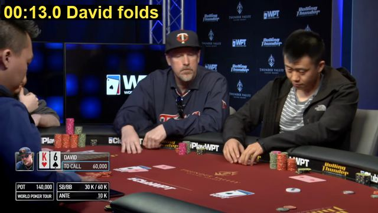
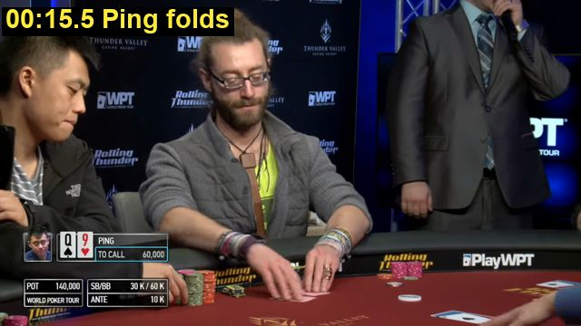
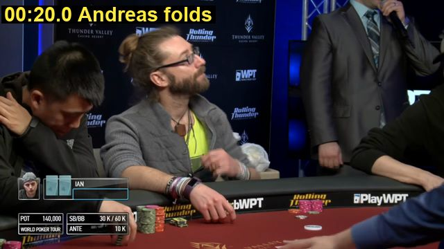
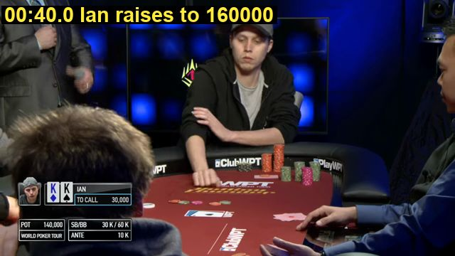
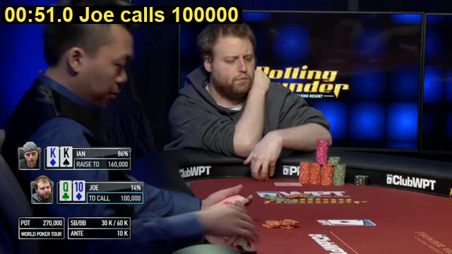
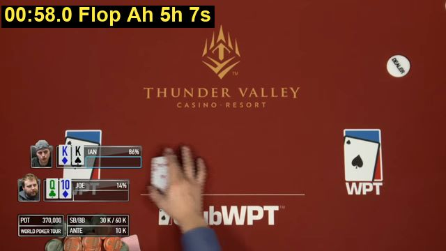
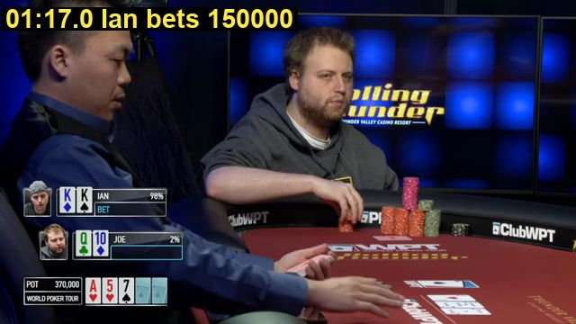
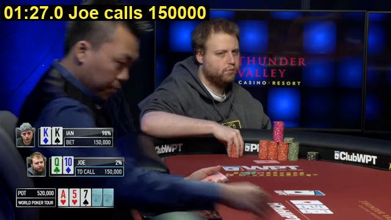
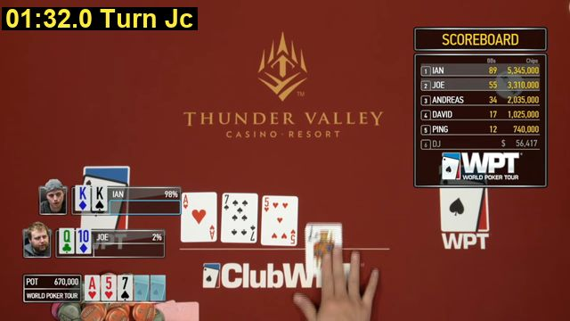
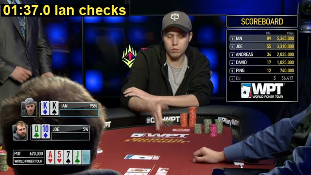
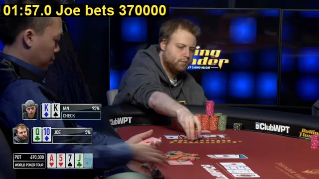
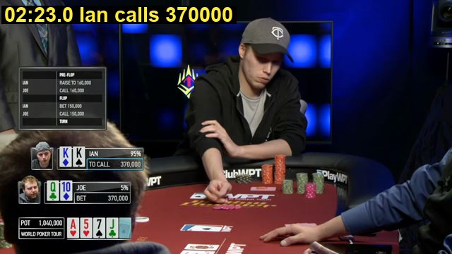
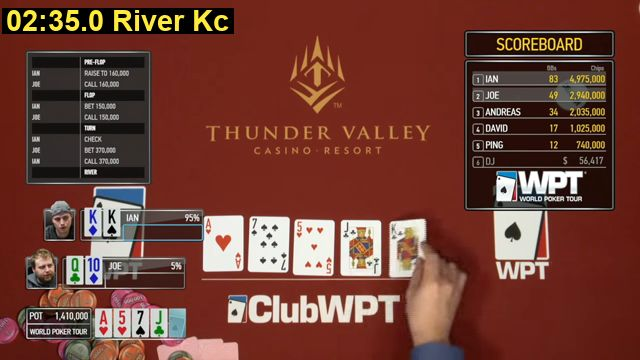
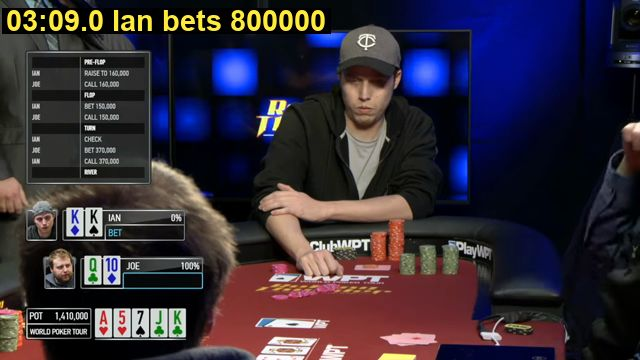

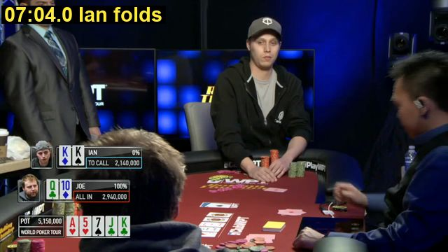
What the check caught
Catch 1: the turn bet was 8 s late. I had it at 02:05. The frames show Joe pushing his chips at 01:57 and his BET label at 01:58, so the fix went in as a new version.
The on-screen pot only changes at 02:07, about 10 s after the chips, while the dealer counts. Flop, turn and river cards were also moved 1–2 s earlier, to when each card first shows.
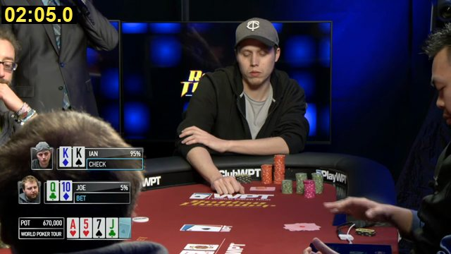
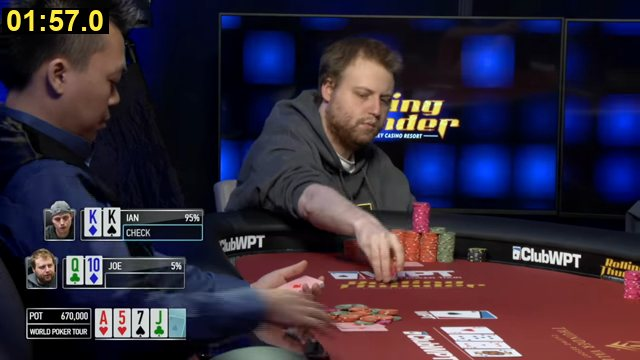
Version 1 verified
imported
23:26
Version 2 verified
Turn bet time: 02:05 was when the pot figure changed. The chips and the BET label are at 01:57.
23:34
Version 3 verifiedin use
Board card times: each card first shows face up at 00:58, 01:32 and 02:35. The earlier times were when the overlay updated.
23:40
Every version is kept. Only a version that replays correctly goes into use. Version 2's note says the pot figure changed at 02:05;
with the fixed frame tool it changes at 02:07. The bet time it records (01:57) still holds, and the stored note is left as written.
Catch 2: my own frame tool ran late. The helper that pulls frames out of the video returned a frame up to 5 s after the second I asked for.
I noticed when the big photo at the top showed the wrong moment. I fixed it, added a test that pins the exact second, and re-checked the times that matter.
The 16 proof frames above came out identical before and after, and the bet, all-in and fold times all held.
What worked, what was hard
Worked
- One real clip went through the same app: legal-hand check, pot odds, two what-ifs, tap-to-jump video times.
- The TV shows Joe's hidden cards. Poker Memory kept them out of every number and shows them only as hindsight.
- Two of my own mistakes (a late turn bet, a late frame tool) were caught by looking at frames, and fixed with a new version and a test.
- Following the README from scratch gives the same answers (I re-ran it).
Hard or not solved
- I read the hand by eye, frame by frame. There is no automatic video reading yet.
- Times are good to about 1–3 s. The fold hides in a face close-up, so it may be 1–2 s earlier than 07:04. Think times are video-clock times, and the clip may be edited.
- Seat numbers and the button are guessed. The video never shows them.
- A TV show needed three changes a home game didn't: antes, hole-card cameras, and an open-license rule.
- Free-form timing questions ("how long did I think?") are not understood; it falls back to the whole summary.
- One hand, in-person only.
Next: read the video automatically (cards and pot are printed on screen), or run this on a recording you have.
Where the video came from
Incredibly Unbelievable Fold on the World Poker Tour by World Poker Tour, licensed
CC BY 3.0. Source on Wikimedia Commons.
Real footage of a WPT Rolling Thunder final table. The 35 MB file is not in git:
scripts/fetch_real_video.py downloads it
and checks SHA-1 9e4f94ad95e0…. The frames above are resized and labeled (adapted material); the clip itself is unchanged.Run it yourself
.\.venv\Scripts\python.exe scripts\fetch_real_video.py .\.venv\Scripts\poker-memory.exe --data data\real import examples\real\wpt_rolling_thunder.yaml .\.venv\Scripts\poker-memory.exe --data data\real end wpt-rolling-thunder-final-table .\.venv\Scripts\poker-memory.exe --data data\real ask "Was my river fold to the raise reasonable? what if he bluffs 10%" .\.venv\Scripts\poker-memory.exe --data data\real serve # then: cd web; npm run start
Branch
main. Proof frames for any session file:
scripts\event_frames.py FILE.yaml --out DIR.